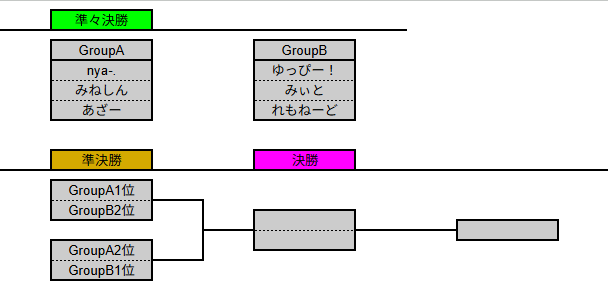
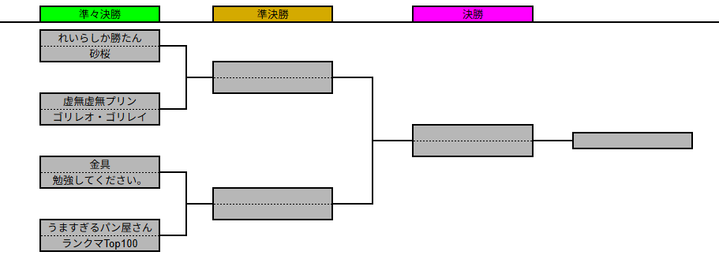
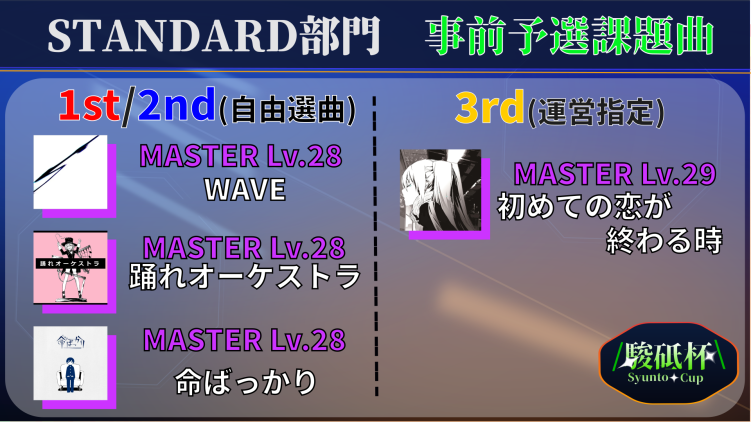
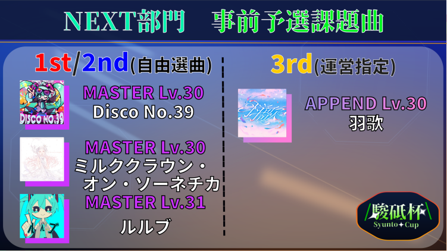
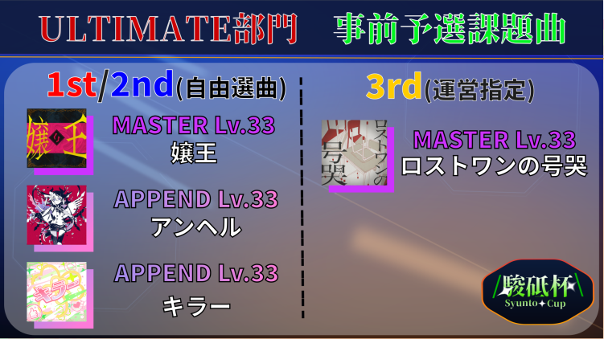
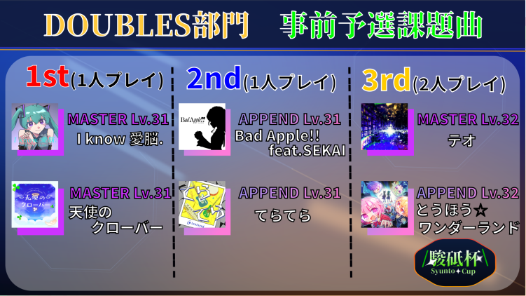

第6回駿砥杯について
大会のエントリーは終了しました。
大会実施概要
- STANDARD部門：8月21日（金） 19:00〜
- NEXT部門：8月21日（金） 19:00〜
- ULTIMATE部門：8月22日（土） 19:00〜
- DOUBLES部門：8月23日（日） 19:00〜
選曲範囲
STANDARD部門
NEXT部門
ULTIMATE部門
DOUBLES部門
共通ルール
- 全部門に重複して参加することが可能です。
- カスタムルームで試合の進行を行います。
- プレイヤー名はエントリーフォームの「登録名」の欄に入力したものにしてください。
- プレイ中に回線切断・ラグ・無反応等が発生した場合はその楽曲を再度プレイします（2回プレイした人は良い方の成績を反映します）。
- 同点となり大会の進行に影響がある場合は未プレイ課題曲からランダムで決定した楽曲をプレイします。
- 得点に関するルールは以下の通りになります。
PERFECT：3点
GREAT：2点
GOOD：1点
BAD/MISS：0点
大会要項
STANDARD部門
準々決勝
- 5人1組で進行します。
- 各プレイヤーが1人1曲ずつ課題曲からBANを行います。BANの順番はランダムで決定します。
- 残った楽曲の中からランダムで選ばれた3曲を5人全員で同時にプレイします。
- 3曲の合計得点が高い順に順位を決定します。
- 1位は決勝へ進出、2〜4位は準決勝へ進出となります。
準決勝
- 準々決勝を勝ち上がった4名で行います。
- 準々決勝の順位が低いプレイヤーから順に、1人1曲ずつ課題曲からBANを行います。
- 残った楽曲の中からランダムで選ばれた3曲をプレイします。
- 3曲の合計得点が高い上位2名が決勝へ進出します。
決勝
- 準決勝2位→準決勝1位→準々決勝1位の順で、1人1曲ずつ課題曲からBANを行います。
- 残った楽曲からランダムで選ばれた2曲と、運営が制作した初見譜面1曲の計3曲をプレイします。
- 3曲の合計得点が高い順に最終順位を決定します。
NEXT部門
準々決勝
- 3名ずつの計4グループ（グループA・B・C・D）に分かれて進行します。
- 各グループで1人1曲ずつ課題曲からBANを行います。BANの順番はランダムで決定します。
- 残った楽曲の中からランダムで選ばれた3曲をプレイします。
- 各グループの合計得点上位2名が準決勝へ進出します。
準決勝
- グループA・Bの通過者でグループX、グループC・Dの通過者でグループYを作成します。
- グループXでは「B2位→A2位→A1位→B1位」の順でBANを行います。
- グループYでは「D2位→C2位→C1位→D1位」の順でBANを行います。
- 残った楽曲の中からランダムで選ばれた3曲をプレイします。
- 各グループの合計得点上位2名が決勝へ進出します。
決勝
- グループY2位→グループX2位→グループX1位→グループY1位の順でBANを行います。
- 残った楽曲2曲と、運営が制作した初見譜面1曲の計3曲をプレイします。
- 3曲の合計得点が高い順に最終順位を決定します。
ULTIMATE部門
準々決勝
- 3名ずつの計2グループ（グループA・B）に分かれて進行します。
- 各グループで1人1曲ずつ課題曲からBANを行います。BANの順番はランダムで決定します。
- 残った楽曲の中からランダムで選ばれた3曲をプレイします。
- 各グループの合計得点上位2名が準決勝へ進出します。
準決勝・決勝
- トーナメント形式で進行します。
- トーナメント表は下記画像の通りとします。
- トーナメント表の左側（または上側）のプレイヤーから1人1曲ずつBANを行います。
- 続いて、右側（または下側）のプレイヤーから1人1曲ずつPICKを行います。
- BAN・PICKされなかった楽曲の中からランダムで1曲を選択し、計3曲をプレイします。
- 3曲の合計得点が高いプレイヤーが勝利となります。

DOUBLES部門
準々決勝〜決勝
- トーナメント形式で進行します。
- トーナメント表は下記画像の通りとします。
- BAN・PICK方式を採用します。
- 予選順位が下のチームから順にBANを1曲ずつ行います。
- その後、その逆の順でPICKを1曲ずつ行います。
- BANもPICKもされなかった課題曲からランダムで1曲選択し、計3曲をプレイします。
- 1曲目と2曲目は別のメンバーがプレイし、3曲目はチーム2名ともがプレイする形となります。
- 3曲の合計得点が高いチームが次戦に進出できます。

課題曲
STANDARD部門
（7月末発表予定）
NEXT部門
（7月末発表予定）
ULTIMATE部門
（7月末発表予定）
DOUBLES部門
（7月末発表予定）
事前予選
エントリー数が、STANDARD部門・NEXT部門・ULTIMATE部門は16名を、DOUBLES部門は8ペアを超えた場合に実施します。
STANDARD部門

NEXT部門

ULTIMATE部門

DOUBLES部門

その他
- やむを得ず大会を欠場する場合には前日までに主催者(kaima17443)へDMでご連絡ください。
- メンション5分以内に反応がない場合は欠場扱いとなります。
駿砥杯運営委員会公式ホームページは
こちら